Towards Learning Boulder Excavation with Hydraulic Excavators
한줄 요약 — 바위 형상과 목표점만으로 5관절 digging trajectory를 생성하도록 시뮬레이션 curriculum과 domain randomization으로 PPO를 학습했으며, 12 t 실기 굴착기에서 0.4~0.7 m 바위 40회 시험의 70%를 회수해 사람 숙련자 83%에 접근했다.
1.연구 배경 및 동기
버킷을 바꾸지 않고 불규칙 암석을 꺼내는 반응형 조작
현장 정지와 굴착을 시작하기 전에 큰 암석을 제거해야 하지만, 숙련자는 별도 그리퍼로 교체하지 않고 기존 digging bucket을 사용한다. 불규칙한 형상과 매몰 정도를 보면서 boom·stick·telescopic·bucket·turn을 조합하고, 단단한 지반에서는 암석을 표면으로 끌며 부드러운 지반에서는 버킷을 깊이 관입한다. 먼지·그림자·7~10 m 관측거리와 arm occlusion 때문에 정밀 모델 기반 파지도 어렵다.
기존 자율굴착은 연속 토사 채움에 초점을 맞춰 개별 암석 pose의 변화에 반응하지 못한다. 반대로 dry-stone construction의 force-closure grasping은 상세 mesh와 전용 gripper, 수작업 설계된 파지·재정렬을 요구한다. 표준 버킷과 불완전한 perception에서 토양 저항에 맞춰 움직이는 개별 물체 정책은 이 둘 사이의 공백이다.
논문은 암석을 완전히 복원하지 않고 RGB의 SAM2 segmentation을 LiDAR에 투영해 20개 점만 정책에 제공한다. Isaac Lab의 excavator·rock rigid-body dynamics와 Fundamental Equation of Earth-Moving 기반 2D soil force를 결합하고, PPO가 alignment→scooping→lifting의 연속 관절속도를 학습한다.
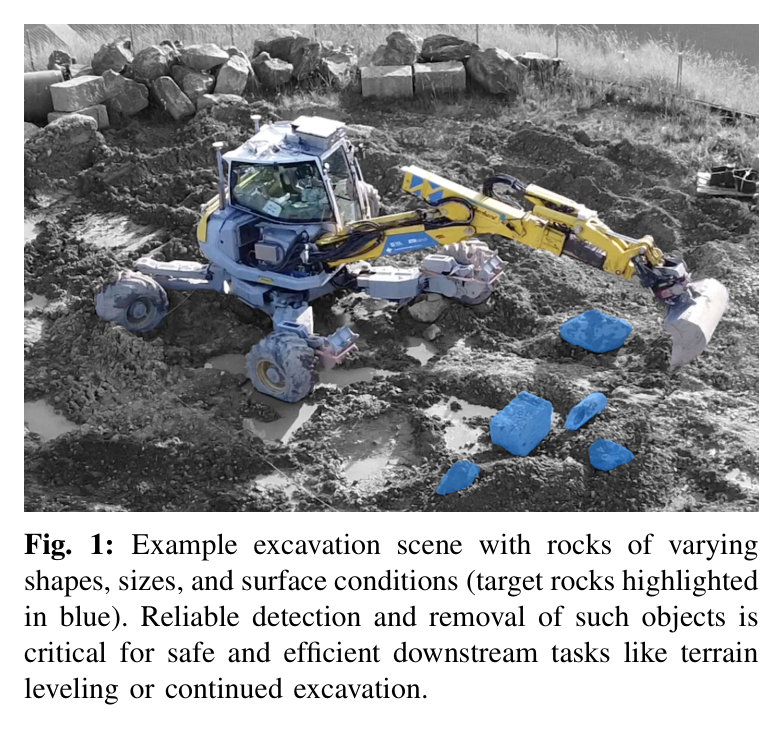
원문 Figure 1 · PDF p.2 — Fig. 1: Example excavation scene with rocks of varying shapes, sizes, and surface conditions (target rocks highlighted in blue). Reliable detection and removal of such objects is critical for safe and efficient downstream tasks like terrain leveling or continued excavation.
선행 연구의 한계
연속 토사 RL은 height field와 채움량 보상에 맞춰져 hard soil에서 미끄러지는 개별 암석을 반응형으로 재포착하지 못한다.
석재 grasp planner는 정확한 3D mesh와 특수 end-effector를 요구해 굴착 작업 중 tool change가 필요하다.
표준 digging bucket으로 불규칙 암석을 획득하는 rigid-body+analytical-soil RL framework를 제안한다.
SAM2와 cabin LiDAR를 결합해 암석당 20개 점만 쓰는 희소 3D perception pipeline을 실차에 배치한다.
토질을 명시적으로 추정하지 않고 고유감각에 따라 hard-soil dragging과 soft-soil penetration 전략이 emergent하게 나타남을 보인다.
12 t Menzi Muck M545에서 크기 0.4·0.7 m, soft·hard soil 40회 시험으로 70% 성공률과 human 83%를 비교한다.
2.방법론 및 시스템 구성
센서 point cloud에서 바위 중심·주축·크기를 추정하고 목표점과 함께 정책 입력으로 쓴다. 정책은 boom, stick, bucket, 좌우 wheel-leg의 5관절 명령을 생성한다.
FEE 토양과 무작위 바위 형상·밀도·마찰, 최대 1.2 s 지연을 포함한 curriculum PPO로 파기·굴림·포획 sequence를 학습한다. 접촉 뒤 curl 0.5 rad와 lift 0.5 m 조건으로 성공을 판정한다.
처리 파이프라인
1
암석·토양 domain 생성
50개 scanned geometry의 축 크기, density 2500 kg/m³ 기준 질량 ±10%, friction 0.35~0.6을 randomize한다. soft/hard soil은 cohesion, friction angle, unit weight, cavity factor가 다른 FEE parameter로 구성한다.
2
희소 가림 모사
Cabin 위치의 virtual LiDAR ray가 rock과 bucket mesh를 함께 교차해 실제와 유사한 occlusion을 만든다. Target mesh hit만 추출해 20개 3D point로 downsample한다.
3
PPO 관측·행동
정규화된 proprioception, bucket state, turn history, sparse point cloud에서 turn·boom·stick·tele·pitch velocity를 출력한다. 최대 1.2 s delay를 episode마다 randomize하고 turn history가 이를 덮도록 한다.
4
Curriculum과 안전 termination
29 s timeout, base/bucket/joint 속도, boulder drop, 잘못된 angle of attack을 failure로 종료한다. 암석이 shovel 안에서 0.5 rad 이상 curl되고 soil 위 0.5 m를 넘으면 성공이다.
5
실차 perception
Ouster OS1 Rev 6와 ZED 2i를 cabin에 달고 사용자가 RGB에서 5개 pixel로 SAM2를 초기화한다. Mask를 LiDAR에 back-project하고 RTX 4080에서 약 95 ms inference해 6 Hz policy에 전달한다.
6
유압 실행과 평가
Policy velocity를 M545의 electrically actuated pilot valves, PID, feed-forward valve-flow controller로 실행한다. Soft/hard와 small/big 4조건을 각 10회 반복하고 인간과 동일 과제를 비교한다.
정렬이 끝난 뒤 작은 turn 명령을 제거해 나머지 scooping과 lifting이 안정적인 2D arm plane에서 진행되게 한다.
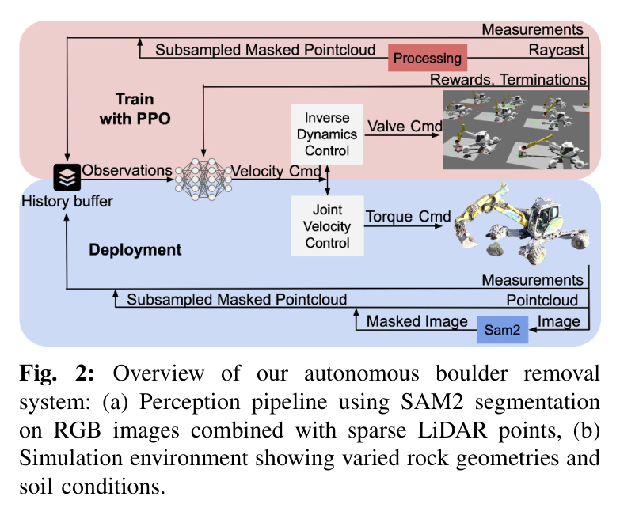
원문 Figure 2 · PDF p.3 — Fig. 2: Overview of our autonomous boulder removal system: (a) Perception pipeline using SAM2 segmentation on RGB images combined with sparse LiDAR points, (b) Simulation environment showing varied rock geometries and soil conditions.
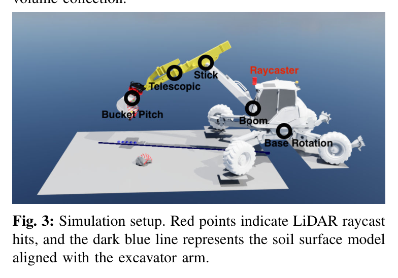
원문 Figure 3 · PDF p.3 — Fig. 3: Simulation setup. Red points indicate LiDAR raycast hits, and the dark blue line represents the soil surface model aligned with the excavator arm.
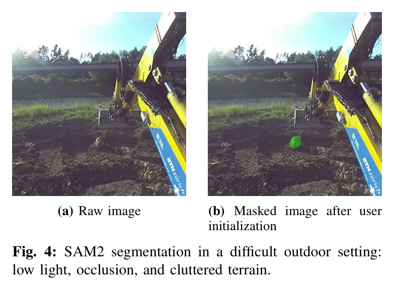
원문 Figure 4 · PDF p.5 — Fig. 4: SAM2 segmentation in a difficult outdoor setting: low light, occlusion, and cluttered terrain.
3.핵심 기술
20-point 암석 표현과 SAM2-LiDAR 결합
정책은 dense reconstruction 대신 target rock의 3D point 20개만 받는다. RGB mask가 object identity를 주고 LiDAR가 장거리 metric depth를 제공하므로 조명 변화에 강하면서도 입력 차원이 작다.
실차에서는 사용자가 최초 5개 pixel을 찍고 SAM2 video tracking이 이후 mask를 유지한다. 그러나 bucket 접근 시 완전 가림이 발생하면 temporal memory 없이 점이 사라지는 것이 주요 실패 원인이다.
Ouster OS1 Rev 6 + ZED 2i
RTX 4080에서 약 95 ms, 정책 6 Hz
simulation raycast에 bucket occlusion 포함
Rigid rock와 analytical soil의 혼합 시뮬레이션
Rock과 bucket 충돌은 Isaac Lab 강체 dynamics가, 지면 저항은 FEE 기반 2D 모델이 담당한다. 입자 토양보다 빠르면서 암석 슬라이딩과 버킷 저항을 동시에 제공해 대규모 PPO가 가능하다.
50개 실제 scanned rock geometry
soil parameter domain randomization
평면 지반과 수직 excavation slice 가정
토질 추정 없는 고유감각 적응
정책은 cohesion 같은 토질 label을 관측하지 않는다. 초기 관입에서 boom·stick torque가 높으면 수평 이동을 늘려 표면으로 끌고, 저항이 낮으면 짧은 경로로 아래에 진입한다. Hard-soil path는 soft-soil보다 약 40% 길게 나타났다.
alignment→scooping→lifting phase가 emergent
joint torque가 soil resistance의 proxy
turn deadband 이후 인간처럼 planar scoop 수행
Sim-to-real 지연·안전 curriculum
최대 1.2 s의 제어 delay와 물성·자세 변화가 학습 중 무작위화된다. 속도와 attack angle termination은 큰 굴착기의 위험한 action을 억제하고, valid collision-free initial state cache가 reset 안정성을 높인다.
2×256 leaky-ReLU actor-critic
PPO+GAE, learning rate 1e-4
9000 iterations, 24 steps/environment/update
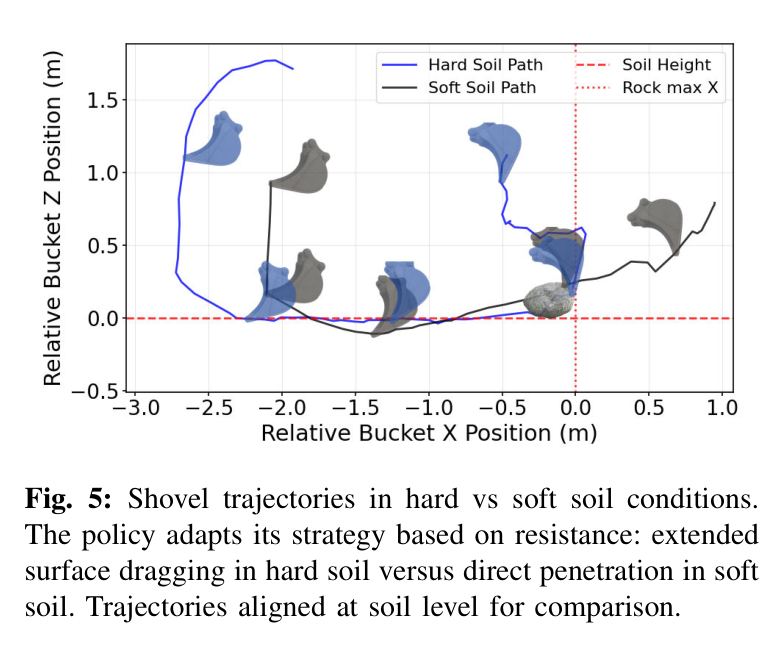
원문 Figure 5 · PDF p.6 — Fig. 5: Shovel trajectories in hard vs soft soil conditions. The policy adapts its strategy based on resistance: extended surface dragging in hard soil versus direct penetration in soft soil. Trajectories aligned at soil level for comparison.
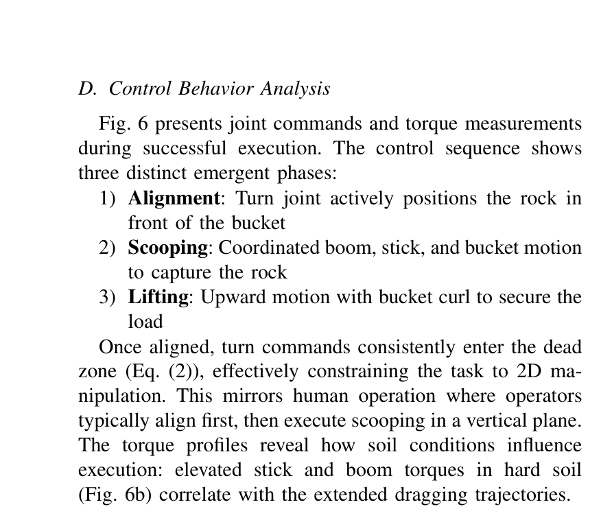
원문 Figure 6 · PDF p.7 — Fig. 6 presents joint commands and torque measurements during successful execution. The control sequence shows three distinct emergent phases: 1) Alignment: Turn joint actively positions the rock in front of the bucket 2) Scooping: Coordinated boom, stick, and bucket motion to capture the rock 3) Lifting: Upward motion with bucket curl to secure the load Once aligned, turn commands consistently enter the dead zone (Eq. (2)), effectively constraining the task to 2D ma- nipulation. This mirrors human operation where operators typically align first, then execute scooping in a vertical plane. The torque profiles reveal how soil conditions influence execution: elevated stick and boom torques in hard soil (Fig. 6b) correlate with the extended dragging trajectories.
4.실험 결과
실험 환경·장비·데이터
Simulation은 NVIDIA Isaac Lab, 50개 scanned rock, soft/hard FEE soil과 수천 parallel environments를 사용했다.
Hardware는 12 t Menzi Muck M545 walking excavator이며 joint IMU, magnetostrictive leg sensor, cylinder pressure torque estimate, onboard IMU를 사용한다.
Simulation에서 Boulder RL은 small/soft 96%, big/soft 97%, small/hard 94%, big/hard 88%로 평균 94%를 달성했다. Continuous Digging RL은 각각 86%, 44%, 4%, 0%, 평균 33%였다. 토사가 부드럽고 암석이 작을 때는 일반 scoop가 우연히 포획하지만, hard soil과 큰 암석에서는 pose를 계속 보며 깊이와 경로를 바꾸는 반응형 object policy가 필요했다. Unseen big rocks hard-soil 시험도 87%로 training geometry 88%와 거의 같았다.
실차 40회에서 자율 정책은 overall 70%, 인간은 83%였다. Small/soft는 둘 다 90%였지만 small/hard는 자율 50%, 인간 80%로 가장 큰 30%p 차이가 났다. 큰 암석은 soft 80%/90%, hard 60%/70%였다. 정책은 hard soil에서 soft soil보다 약 40% 긴 수평 경로를 선택했고, torque가 큰 관입 시도 뒤 dragging으로 전환했다.
실패의 다수는 작은 암석이 bucket 뒤로 완전히 가려져 target point가 사라지는 경우였다. Soft soil에서는 토사가 bucket을 채워 암석이 lift 중 넘쳤고, debris·불균일 지면은 학습한 평면 모델과 달랐다. Large rock은 coarse turn dynamics 때문에 lateral entrapment가 생기기도 했다.
정량 결과
평가 항목
정량 결과
조건·맥락
원문 근거
Simulation 평균 성공률
94%
Boulder RL, 4개 size/soil 조건; baseline 33%
PDF p.6
Unseen rock 성공률
87%
25개 unseen 0.8~1.0 m rock, hard soil; training rock 88%
PDF p.6
Hardware 전체 성공률
70%
12 t M545, 40 trials; human 83%
PDF p.6
Small/hard 성공률
50%
10 trials; human 80%
PDF p.6
Hard-soil 경로 증가
약 40%
soft soil 대비 수평 dragging path
PDF p.6
희소 perception
20 LiDAR points/rock
SAM2 mask로 target point 추출
PDF p.1
실패 사례와 경계조건
작은 암석이 근접 접근에서 bucket과 arm 뒤로 완전히 가려지면 tracking을 잃고 final scoop를 수정하지 못한다.
Soft soil에서 함께 퍼진 토사가 bucket을 과충전해 lift 중 암석이 떨어진다.
Hard soil에서 관입 깊이가 부족하면 암석이 표면으로 미끄러져 bucket 안으로 들어오지 않는다.
거친 turn dynamics와 부정확한 alignment가 큰 암석을 bucket 옆에 끼게 만들 수 있다.
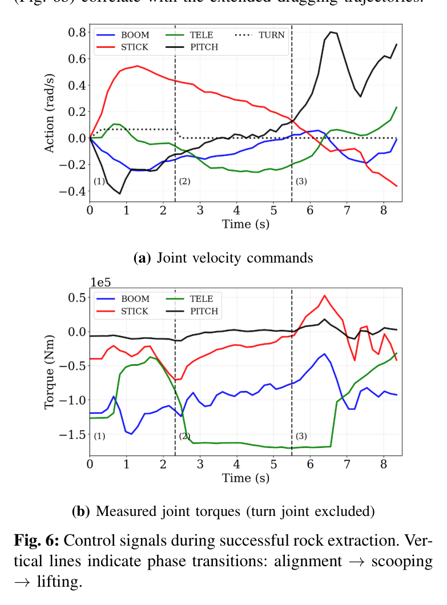
원문 Figure 6 · PDF p.7 — Fig. 6: Control signals during successful rock extraction. Ver- tical lines indicate phase transitions: alignment →scooping →lifting.
5.한계 및 향후 연구
현재 한계
고정 cabin sensor의 self-occlusion과 temporal object memory 부재가 작은 암석 실패의 주원인이다.
평면 2D analytical soil model은 암석-토양 결합, 매몰, debris 축적, 불균일 지형을 충분히 표현하지 못한다.
이 정책은 일반 토양 digging이 놓치는 큰 암석 회수 skill을 제공한다. ExT의 task token으로 등록하면 일반 굴착 중 rock 탐지 시 전환하고 실패하면 abort/reset으로 복귀하는 workflow를 만들 수 있다.
압력 기반 힘 추정과 temporal point-cloud tracking을 더하면 가려진 바위의 접촉 상태와 이동을 추적할 수 있다.
Height-map planner가 지중 장애물을 감지하면 boulder policy로 전환하고 성공 후 원래 절삭선으로 복귀할 수 있다.
Cylinder pressure torque와 point-cloud motion을 이용해 암석이 끌리는지·버킷에 들어왔는지 온라인 판정할 수 있다.
표준 버킷을 유지하므로 작업 cycle 손실과 tool-change 인프라를 줄이며 소형 현장 retrofit에 유리하다.
다중암석 환경에서는 perception confidence와 접근 가능성을 비용으로 둔 순서계획이 후속 핵심이다.
7.전체 그림·표
본문 핵심 위치에 배치하지 않은 원문 Figure와 Table을 원문 페이지 순서로 수록한다.
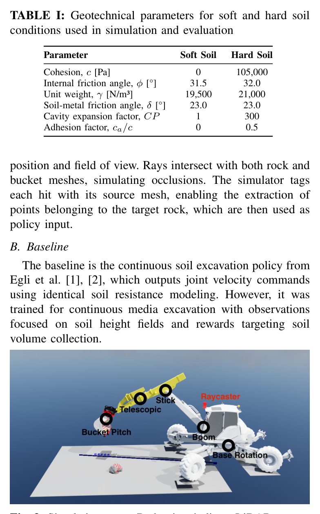
원문 Table I · PDF p.3 — TABLE I: Geotechnical parameters for soft and hard soil conditions used in simulation and evaluation
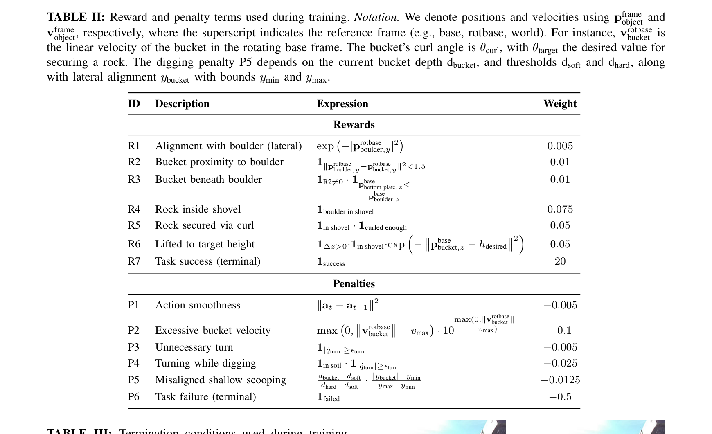
원문 Table II · PDF p.5 — TABLE II: Reward and penalty terms used during training. Notation. We denote positions and velocities using pframe object and vframe object, respectively, where the superscript indicates the reference frame (e.g., base, rotbase, world). For instance, vrotbase bucket is the linear velocity of the bucket in the rotating base frame. The bucket’s curl angle is θcurl, with θtarget the desired value for securing a rock. The digging penalty P5 depends on the current bucket depth dbucket, and thresholds dsoft and dhard, along with lateral alignment ybucket with bounds ymin and ymax.
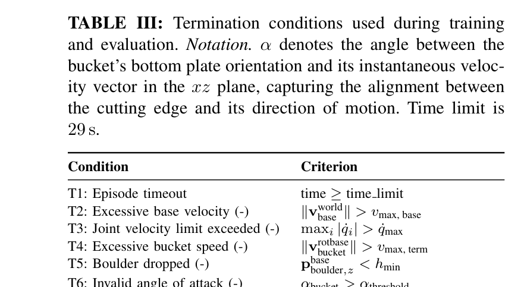
원문 Table III · PDF p.5 — TABLE III: Termination conditions used during training and evaluation. Notation. α denotes the angle between the bucket’s bottom plate orientation and its instantaneous veloc- ity vector in the xz plane, capturing the alignment between the cutting edge and its direction of motion. Time limit is 29 s.
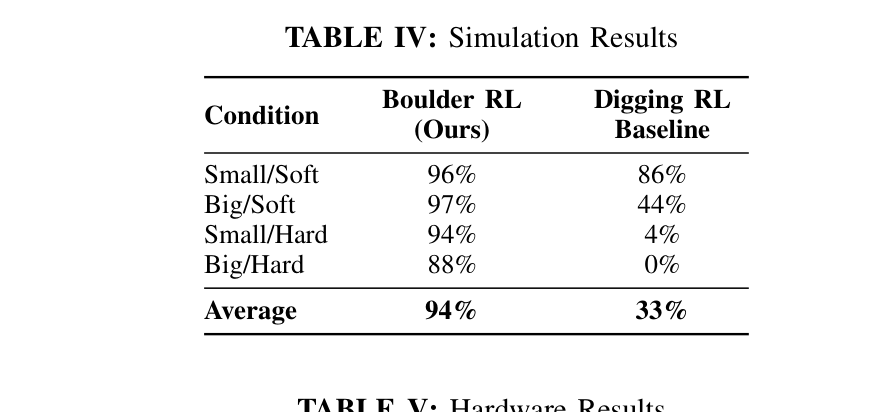
원문 Table IV · PDF p.6 — TABLE IV: Simulation Results